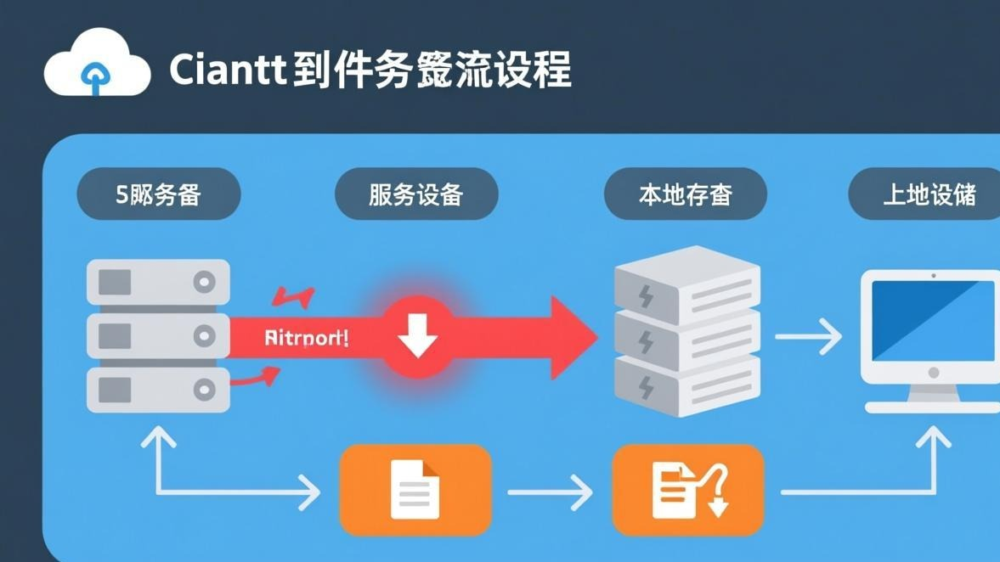
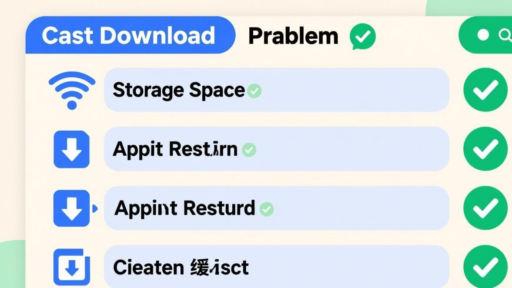

昨天在公司群里，老板发了一份重要的PDF文档，我点了一下准备下载，结果下载进度条就一直卡在0%，旁边那个小圈圈转啊转，转了快五分钟还是没动静。
当时急得我啊，老板在群里问「大家都收到了吧？」，我只能硬着头皮回「收到了收到了」（其实根本没下载下来）。

后来折腾了半天终于搞定了，顺便研究了一下Telegram文件下载卡住的各种可能原因。今天就把这些经验分享出来，希望能帮到遇到同样问题的朋友。
先判断一下是哪种「卡住」
Telegram文件下载卡住其实有好几种表现，不同表现的解决方法也不太一样：
**第一种**：点下载之后，进度条一直卡在0%，转圈转个不停。这种通常是网络连接的问题，或者Telegram的下载服务出了问题。

**第二种**：进度条开始动了，但是走到一半就停了，再也走不动了。这种可能是文件太大，或者网络不稳定导致下载中断。
**第三种**：进度条走完了，但是文件打不开，或者提示「文件已损坏」。这种是下载过程中文件数据丢失了，需要重新下载。
**第四种**：点下载没反应，连转圈都不转。这种可能是Telegram的下载队列满了，或者应用本身卡住了。
搞清楚是哪种情况之后，再对症下药，成功率会高很多。
方法一：取消重新下载（最简单先试这个）
很多时候下载卡住只是个临时故障，取消重新下载就能解决。听起来很简单，但确实是最有效的方法之一。
操作步骤：
1. 点一下正在下载的文件（或者长按） 2. 在弹出的菜单里选择「取消下载」 3. 等个几秒钟，让Telegram把下载队列清空 4. 再次点那个文件，重新开始下载
如果重新下载之后还是卡住，那就试试下面的方法。
方法二：切换网络试试
下载卡住最常见的原因就是网络问题。Telegram的服务器在国外，国内访问有时候会不稳定。
如果你正在用WiFi，可以试试切换到移动数据，或者反过来。有时候换个网络环境，下载就突然正常了。
另外，如果你用的是公司或者学校的网络，可能会有一些限制，导致Telegram的文件下载被拦截或者限速。这种时候可以试试开个VPN或者代理，看看能不能下载。
还有个技巧，就是试试开一下「飞行模式」，等个5秒钟再关掉。这个操作会让手机重新连接网络，有时候能解决一些莫名其妙的网络问题。
小贴士：
如果你经常遇到下载卡住的问题，可以考虑换个DNS。用Google的8.8.8.8或者Cloudflare的1.1.1.1，下载速度可能会快不少。
方法三：清理下载队列
Telegram有个下载队列机制，就是你同时点了好几个文件下载，它们会排成一个队列，一个一个来。
但有时候这个队列会出问题，比如某个文件的下载卡住了，导致后面的文件也都下载不了。这种时候需要手动清理一下下载队列。
操作方法：
1. 打开Telegram设置 2. 找到「数据和存储」 3. 点「存储使用量」 4. 看看有没有正在进行的下载任务 5. 把所有的下载任务都取消掉 6. 重启Telegram 7. 重新尝试下载
清理完下载队列之后，Telegram会重新建立连接，下载卡住的问题通常就能解决了。
方法四：检查存储空间
这个原因听起来有点蠢，但确实挺常见的。如果你的手机或者电脑存储空间满了，Telegram就没地方存下载的文件，自然就会卡住。
特别是下载大文件的时候（比如几百MB的视频或者压缩包），如果剩余空间不够，下载就会失败或者卡住。
检查方法：
**Android**：设置 > 存储，看看还剩多少空间。如果剩余空间少于1GB，建议先清理一下。
**iOS**：设置 > 通用 > iPhone存储空间，同样看看还剩多少。
**电脑**：打开文件管理器，看看Telegram的安装盘还有多少空间。
如果存储空间不够，可以先删掉一些不用的应用或者文件，然后再试试下载。或者也可以去看看Telegram缓存清理指南，清理一下Telegram的缓存，能腾出不少空间。
方法五：修改自动下载设置
有时候下载卡住是因为自动下载设置导致的冲突。比如你设置了一边自动下载图片，一边又在手动下载大文件，这时候Telegram的下载带宽就会被分散，导致手动下载的文件卡住。
解决方法就是临时关闭自动下载：
1. 打开设置 > 数据和存储 > 自动下载媒体 2. 把移动数据、WiFi、漫游三个选项里的自动下载全部关掉 3. 重启Telegram 4. 重新尝试下载那个卡住的文件
关掉自动下载之后，Telegram会把所有的带宽都用来下载你手动选择的文件，下载速度会快很多，也不容易卡住。
等文件下载完成之后，再把自动下载设置改回来就行了。
方法六：换个时间再试
如果上面这些方法都没用，那可能是Telegram的服务器问题。特别是晚上8点到11点这个时间段，Telegram的用户活跃度最高，服务器压力大，下载速度就会变慢，甚至卡住。
这种时候没啥好办法，只能等。可以试试换个时间段再下载，比如凌晨或者早上，那时候服务器压力小，下载速度会快很多。
另外，如果你下载的是特别大的文件（比如几个GB的视频），建议先确认一下发送方是不是还在线上。如果发送方已经下线了，Telegram的P2P传输就会中断，导致下载卡住。这种时候可以私信让对方上线，或者让对方重新发一次文件。
注意：
Telegram的文件下载有个特点：如果文件是通过「文件」功能发送的（就是那个回形针图标），而且文件大小超过20MB，那么只有发送方在线的时候才能下载。如果发送方下线了，下载就会中断。
一些特殊情况的处理
除了上面这些常见情况，还有几种特殊情况可能导致下载卡住：
**1. 文件被删除或者封禁** 如果发送方删除了文件，或者文件因为违规被Telegram封禁了，那么下载就会失败。这种时候会提示「文件不存在」或者「文件已被删除」。没办法，只能让对方重新发。
**2. Telegram版本太老** 如果你用的是很老的Telegram版本，可能会跟新的文件传输协议不兼容，导致下载卡住。这种时候需要更新到最新版本。可以去Telegram下载页面获取最新版。
**3. 防火墙或者杀毒软件拦截** 电脑版用户可能会遇到这种情况。有些杀毒软件会把Telegram的文件下载当成可疑行为，然后拦截掉。这种时候需要把Telegram添加到杀毒软件的白名单里。
**4. 系统时间不正确** 这个听起来很奇怪，但确实会导致下载问题。如果您的系统时间跟实际时间差得太多，Telegram的加密传输就会出问题，导致下载失败。检查一下系统时间是不是准确的。
如果所有方法都没用怎么办？
如果你试了上面所有方法，下载还是卡住，那可能是这个文件本身有问题，或者Telegram的服务器出现了大面积故障。
这种时候可以试试这几个办法：
1. **让对方换种方式发送**。比如对方之前是用「文件」功能发的，可以让他试试直接发图片或者视频（就是直接点相册图标发送）。这两种发送方式的传输协议不太一样，可能一种不行另一种就行。
2. **用网页版试试**。打开web.telegram.org，登录之后试试能不能下载。网页版的下载机制跟客户端不太一样，有时候客户端下载不了的文件，网页版能下载。
3. **让别人帮你下载**。如果你有朋友也在这个群里，可以让他帮你下载，然后通过其他方式传给你。
4. **等官方修复**。如果确实是Telegram服务器的问题，那只能等官方修复了。可以去图片发送失败分类看看有没有其他用户遇到了同样的问题。
常见问题
常见问题
文件下载卡住这个问题，说实话挺烦人的，特别是遇到急用文件的时候。不过大部分情况下，上面这些方法总能搞定。
我自己遇到下载卡住的时候，一般是先取消重新下载，不行就换个网络，再不行就清一下下载队列。这三招基本上能解决80%的下载卡住问题。
如果是因为Telegram服务器的问题，那就只能等了。这种时候可以去做点别的事情，过会儿再来试试。
最后提醒一下，如果你经常需要下载大文件，建议用电脑版Telegram，稳定性比手机版好不少。而且电脑版的下载速度也更快，毕竟电脑的网络带宽一般比手机大。
📱 立即下载 Telegram 最新版
更新到最新版本可修复大部分图片加载问题，官方正版安全无捆绑。